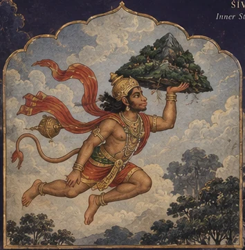

Gaṇeśa
Discernment & Obstacles
The guiding figure of Semester One: wisdom, beginnings, problem-solving, and learning through difficulty.
I bow to God and to the highest Self toward which practice reaches. I bow with gratitude for what I have learned through Jesus; Hanumān; Ādiyogi; Śaṅkara; the Buddha; Lakṣmī; Bhūmi; Vāyu; Indra; Bṛhaspati; Govinda; the archangels; and Rāma and Sītā.
I bow to teachers, traditions, communities, the Earth that carries us, the breath that sustains us, and the life with whom this path is shared.
These figures arise from different traditions and are honored without claiming that their teachings or theologies are identical.
“Placid Ambient” by MusicLFiles · CC BY 4.0. Pause or resume it at any time.
Through practice we refine.
Through study we understand.
Through service we give back.
In unity we remember what truly matters.
Healthy individuals. Healthy communities. Healthy ecosystems.
SĀDHANĀ · SVĀDHYĀYA · SEVĀ · SAṄGHA

Contemporary interpretive illustrations for archetypal study. Explore the traditional artworks and source credits below.
Strengthen body, breath, attention, and inner steadiness.
Learn through land, foodways, stewardship, and reciprocity.
Build belonging through shared practice, care, and participation.
Grow into responsibility through service, readiness, and relationship.
Senses Yoga School does not separate personal practice from the life around it. A mat can become a laboratory for self-awareness. A garden can become a classroom. A neighborhood can become a place of study, service, and leadership.
Read our educational philosophy →
The school honors the contemplative, philosophical, artistic, and embodied traditions of yoga while asking how their wisdom can be practiced responsibly in the places where people live now.
Study is not presented as decoration or distant history. It is joined to breath, movement, reflection, ecology, relationship, and service.
Enter the Learning PathArchetypes enter the apprenticeship as companions for reflection—not identities students are required to adopt. Each image opens a quality to study through practice, story, relationship, and service.
The guiding figure of Semester One: wisdom, beginnings, problem-solving, and learning through difficulty.

A relational lens for witnessing and movement, consciousness and transformation, rest and responsible action.

A counterbalance to practice becoming only labor: creativity, play, devotion, and participation in life.
The Rāmāyaṇa becomes sustained narrative inquiry into formation, devotion, strength, duty, discernment, and return.
Traditional artworks are presented as study images with historical context. Gaṇeśa and Rāmāyaṇa images are public-domain works via Wikimedia Commons. Śiva–Pārvatī and Kṛṣṇa images: SpeakingArch, CC BY-SA 4.0, via Wikimedia Commons.
People enter through a public class, workshop, community project, partnership, or apprenticeship. The path is developmental rather than hurried.
Encounter practices, teachings, and questions.
Support a class, program, site, or community.
Reflect, observe, and preserve what is learned.
Care for relationships, systems, and shared work.
Guide with readiness, humility, and responsibility.
Practice is where the path begins. Service is where learning enters relationship.Practice → Learn → Serve → Teach & Lead
Yoga For Life, public practice, wellness literacy, accessible movement, breath, meditation, and community education.
YAGI, Garden Park, stewardship, foodways, observation, and place-based learning through relationship with land.
Advanced yoga philosophy, Sanskrit, dreamwork, mythology, contemplative psychology, research, and lifelong scholarship.
Music, sacred sound, contemplative listening, movement, storytelling, visual arts, performance, cultural memory, and creative game development. Nāda Yoga / MOGA and Dream Master are growing pathways within this creative field.
Yoga, ecology, foodways, creative placemaking, observation, and community leadership meet through sustained relationship with land.
Enter YAGI
Our schedule follows seasons, community partnerships, parks, gardens, public programs, and the capacity of the people caring for them.
Yoga For Life, Heroic Breathwork, community practice, YAGI gatherings, workshops, and seasonal events.
Open the Public Calendar
Neighborhood & Community Organizations
Accessible wellness and educational programming where communities already gather.
Aging & Disability Access
Adaptive, inclusive opportunities shaped around the people being served.
Schools & Youth
Movement, ecology, reflection, creative learning, and leadership pathways.
Parks & Recreation
Seasonal public practice and place-based community education.
Universities
Service learning, internships, workshops, inquiry, and collaboration.
Workplaces & Workforce
Resilience, mobility, recovery, breathwork, and sustainable practice.
Contributions help keep public practice accessible while sustaining teachers, apprentices, learning sites, materials, and community programs.
Support the School